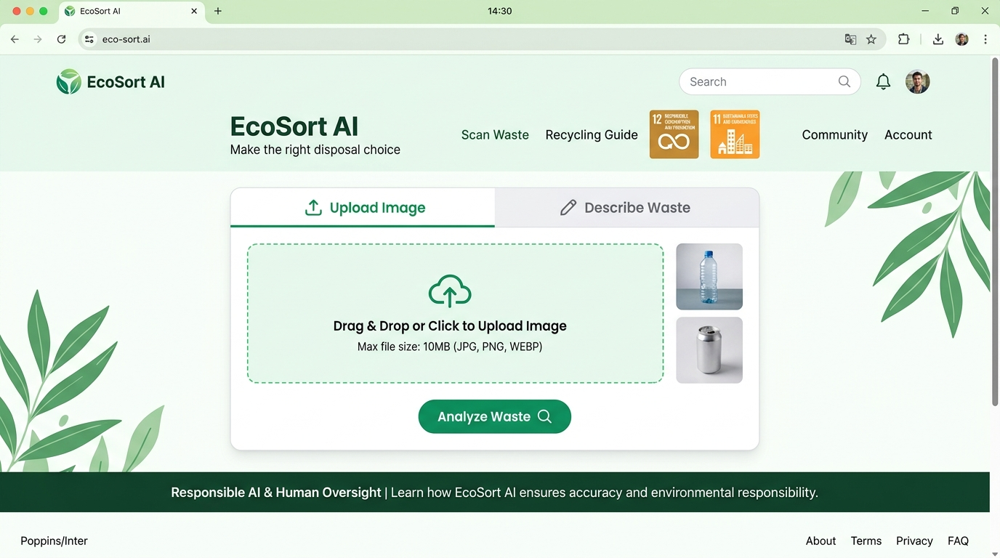
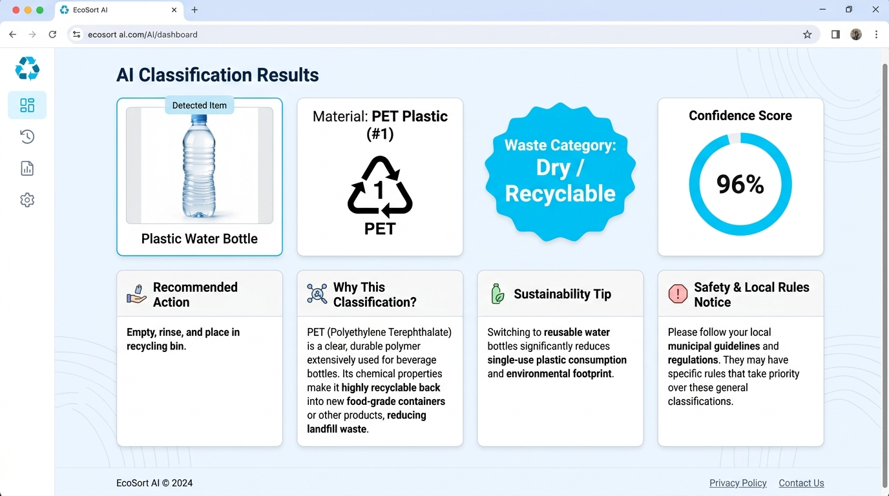

Ready for submission to 1M1B in collaboration with IBM SkillsBuild & AICTE.
AI-Powered Waste Segregation & Disposal Assistant
A full-stack sustainability solution addressing urban waste confusion through multimodal vision intelligence, transparent material classification, and Responsible AI guardrails.
Student Presenter
Vivek Satya Bhushan Munnangi
Institution
Anil Neerukonda Institute of Technology and Sciences (ANITS)
Consumers and students struggle to differentiate between wet organic waste, dry recyclables, e-waste, and hazardous products.
A single greasy pizza box or discarded battery can contaminate an entire recycling batch, causing tons of recyclable material to be sent to landfills.
Sorting guidelines vary between municipalities. Static posters are ignored, leaving citizens without instant guidance at the point of disposal.
Target 12.5: Substantially reduce waste generation through prevention, reduction, recycling, and reuse by 2030.
Target 11.6: Reduce the adverse per capita environmental impact of cities by improving municipal solid waste management.
Image upload (drag & drop) or natural language text fallback
In-memory format check (<5MB). Zero persistent disk storage.
Gemini 1.5/Flash Vision + heuristic fallback adapter
8 validated fields: item, material, bin, confidence, tips
Students and mess staff sorting packaging, delivery boxes, and food scraps.
Daily segregation guidance for kitchen, cosmetics, and packaging waste.
Reduced manual sorting, fewer hazardous cuts, and clean recyclable intake.
Higher yield of clean polymers and metals without organic contamination.


| Item | Result Category | Conf | Status |
|---|---|---|---|
| Plastic Bottle | Dry / Recyclable | 96% | PASS |
| Banana Peel | Wet / Organic | 98% | PASS |
| Amazon Box | Dry / Recyclable | 94% | PASS |
| Used Tissue | General / Non-recyclable | 92% | PASS |
| Soda Can | Dry / Recyclable | 97% | PASS |
| Old Phone | E-Waste | 95% | PASS |
| Battery | Hazardous / Special | 96% | PASS |
| Greasy Pizza Box | General / Non-recyclable | 89% | PASS |
| Glass Bottle | Dry / Recyclable | 96% | PASS |
| Mixed Debris | Uncertain | 42% | PASS |
*Note: Soiled pizza box correctly diverted to General Waste to prevent paper repulping contamination. Mixed debris classified as Uncertain adhering to Responsible AI.
Images are verified in RAM only and destroyed upon HTTP response. No user accounts or photos are ever saved.
The AI never hallucinates or guesses. If confidence is low (<60%), it outputs "Uncertain" and prompts for cleaner photos.
Batteries and chemicals trigger high-visibility alerts forbidding home trash disposal and directing to authorized kiosks.
Every result explicitly details detected item, material taxonomy, percentage confidence gauge, and scientific rationale.
Prominently displayed banner: "AI disposal guidance is informational. Local municipal waste-management regulations always supersede AI recommendations."
"If implemented across an academic campus or community of 2,000 students, EcoSort AI can prevent an estimated 35% recycling contamination, eliminate improper battery disposal, and establish lasting sustainable sorting habits at zero cost to users."
Lower methane emissions from organic waste in landfills; higher recycled polymer recovery.
Transforms passive consumers into proactive stewards of circular consumption (SDG 12).
Reduces municipal sorting labor and prevents costly mechanical breakdowns in waste compactors.